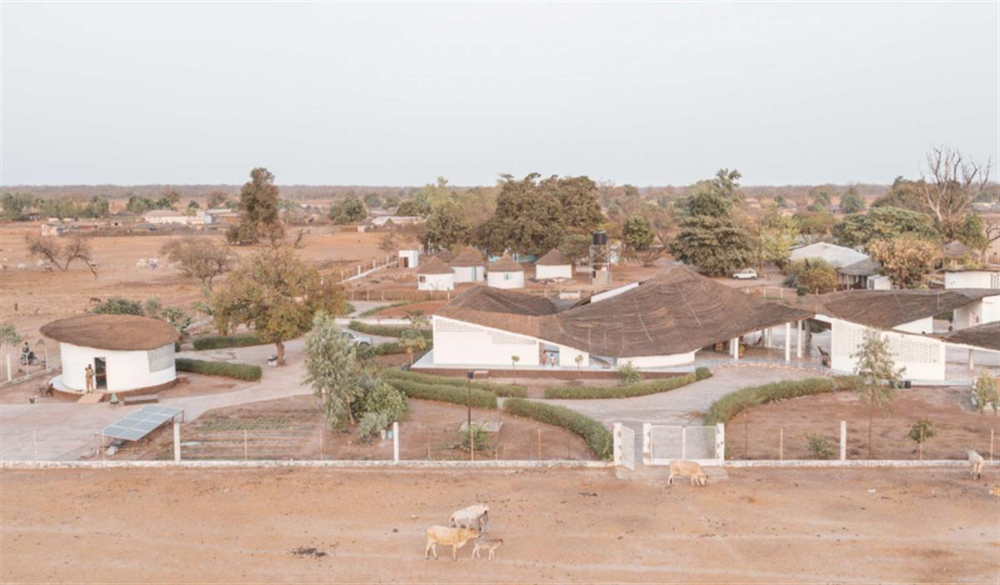
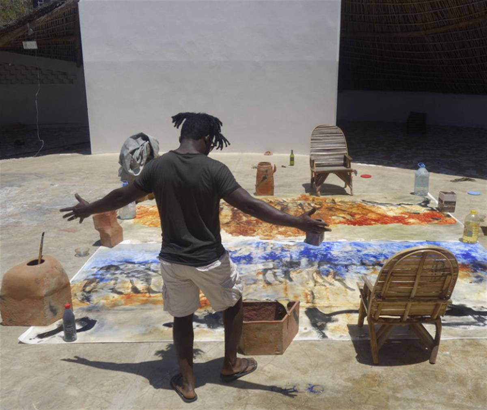
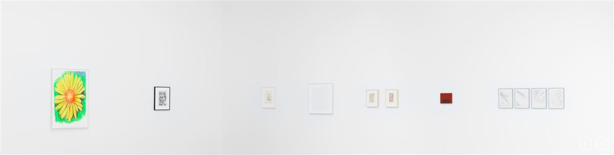
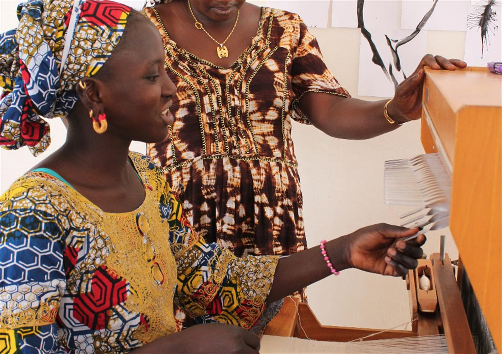
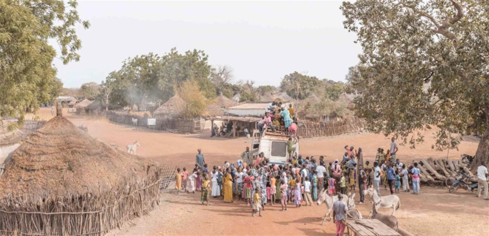

David Zwirner is pleased to announce a benefit exhibition in New York to support Thread, a Senegal-based non-profit cultural and community center established in 2015 by The Josef and Anni Albers Foundation. The exhibition will feature 28 works generously donated by 26 gallery artists and estates, as well as photographs by Giovanni Hänninen depicting Thread and its surroundings. With this fundraiser, Thread will be able to establish an endowment so that it can operate in perpetuity in the region.
Thread is an artists’ residency and community center in Sinthian, a village in the southeastern region of Senegal with a population of nearly 1,000. The Josef and Anni Albers Foundation initiated the project in an isolated part of sub-Saharan Africa to allow painters, dancers, photographers, and other artists from all over the world, as well as from within Senegal, to pursue their own work while also interacting with the local community.
Anni Albers said “You can go anywhere from anywhere.” In the two years since it opened, Thread—like Black Mountain College and the Bauhaus, where Anni and Josef both worked and taught—has proved her point.
Thread’s collaborative enterprises with the people of the region have grown significantly since its inception. Thread now provides agricultural training, and is home to an unprecedented cooperative of some 135 local women who grow and sell nutritious legumes and vegetables—thus eliminating, for the first time, hunger during the season of famine, while also providing income to its members. Thread has also become home to music and dance festivals, soccer tournaments, daily study halls, English classes, and village meetings. In addition, Thread, unlike other local spaces, offers a public gathering place for the female population of Sinthian, as well as teenagers from the surrounding area.
Since Thread has opened, the resident population of Sinthian has grown—the exact opposite of the prevalent trend of people moving away from the area and trying to emigrate. Thread has added inestimable vibrancy, sustainability, and joy to local life, creating bridges between the inhabitants of Sinthian and the surrounding region with a global community of artists, writers, singers, rappers, dancers, food specialists, and designers.


Tomma Abts
Anni Albers
Josef Albers
Ruth Asawa
Carol Bove
R. Crumb
Raoul De Keyser
Marlene Dumas
Marcel Dzama
William Eggleston
Suzan Frecon
Donald Judd
Toba Khedoori
Aline Kominsky-Crumb
Oscar Murillo
Alice Neel
Raymond Pettibon
Neo Rauch
Ad Reinhardt
Bridget Riley
Al Taylor
Wolfgang Tillmans
Luc Tuymans
James Welling
Christopher Williams
Lisa Yuskavage
SOURCE: David Zwirner

